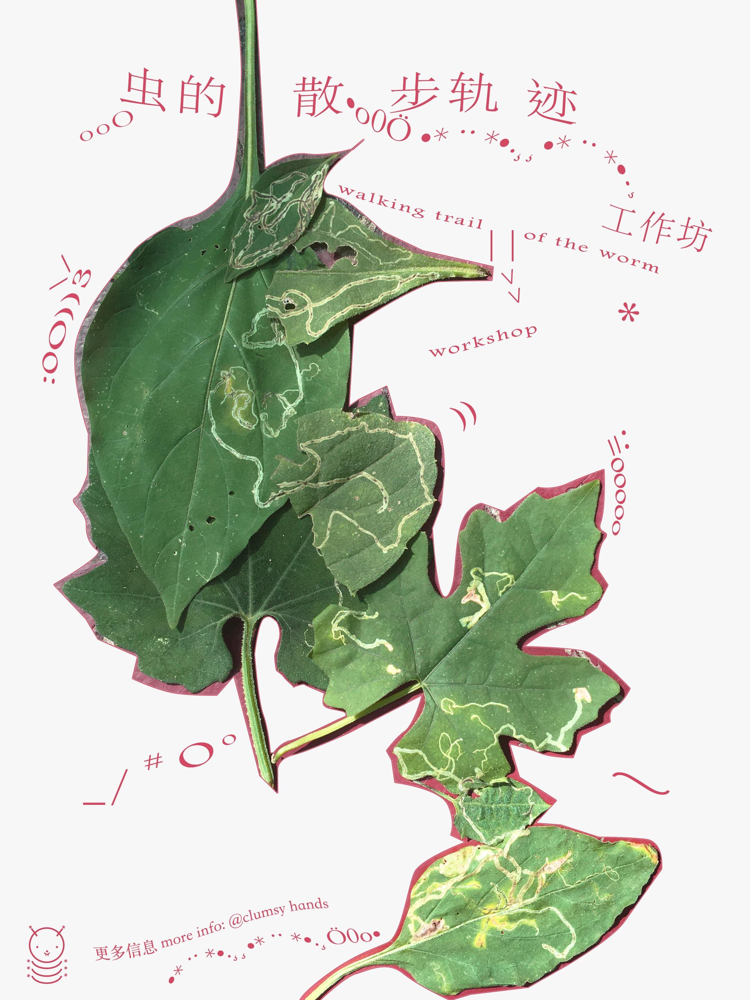
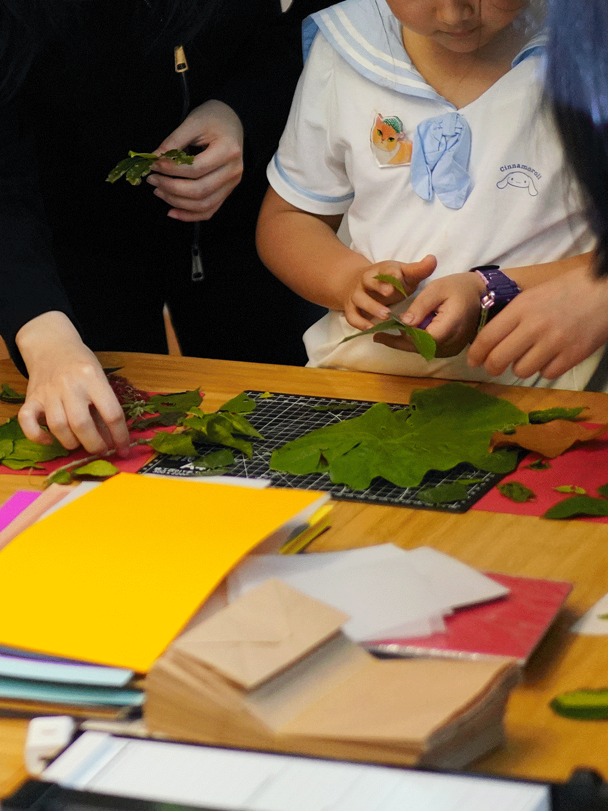
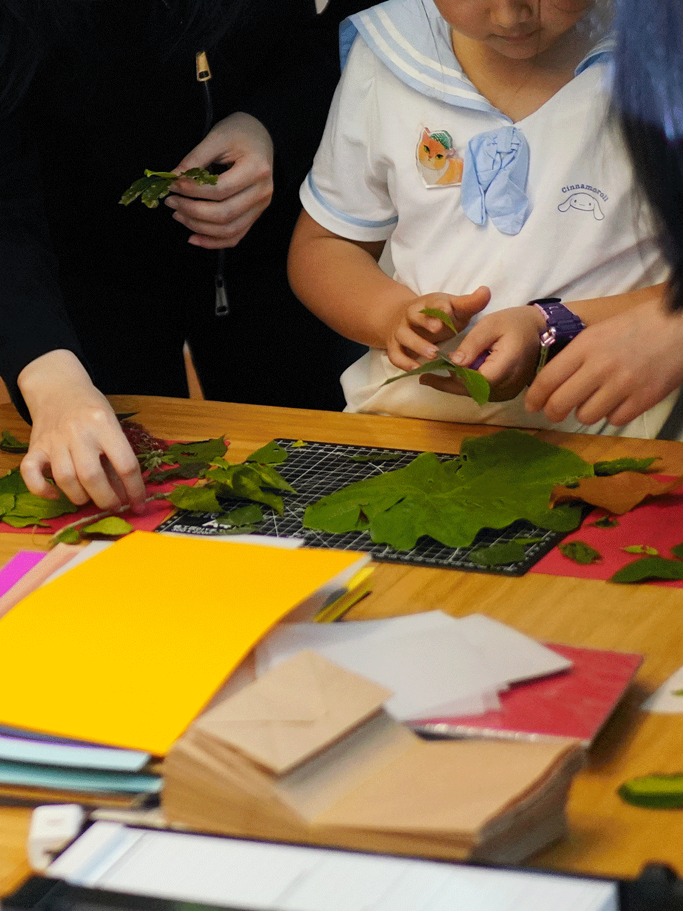
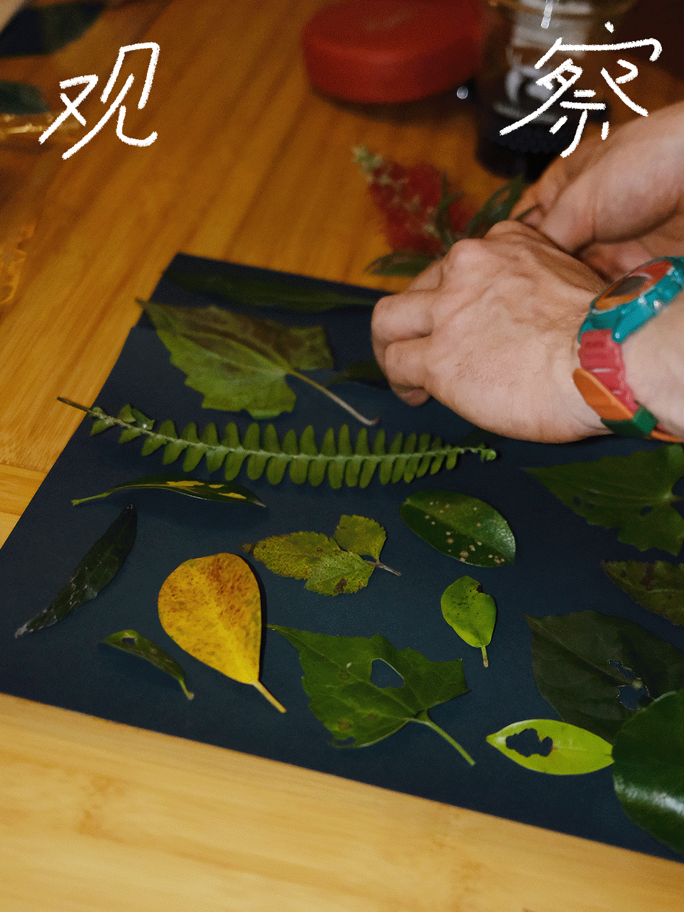
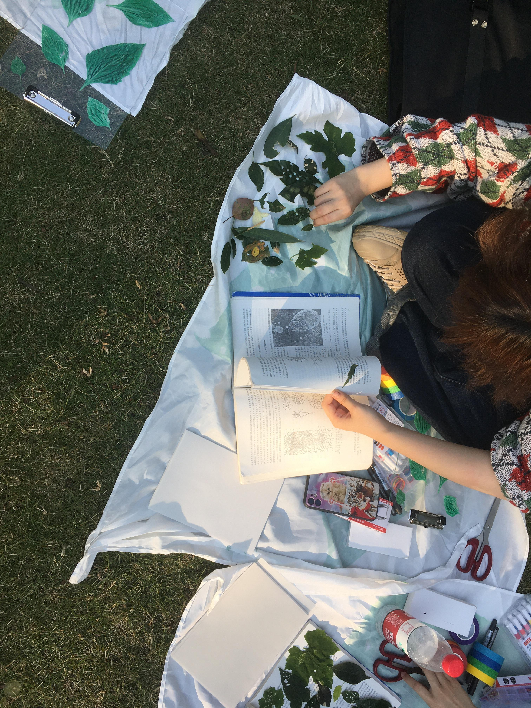
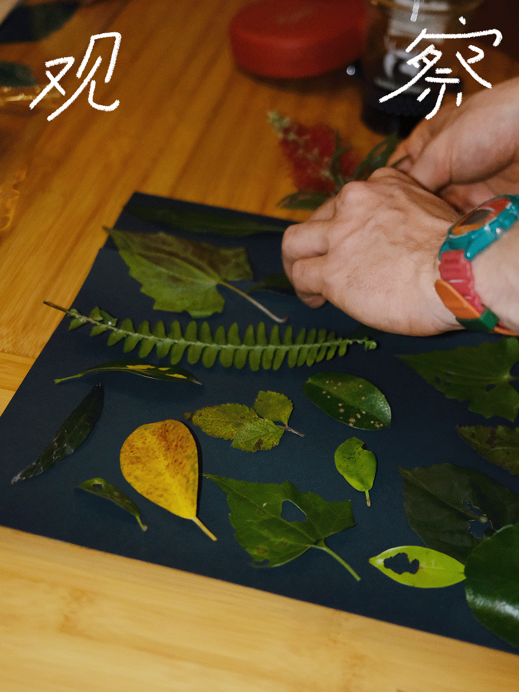
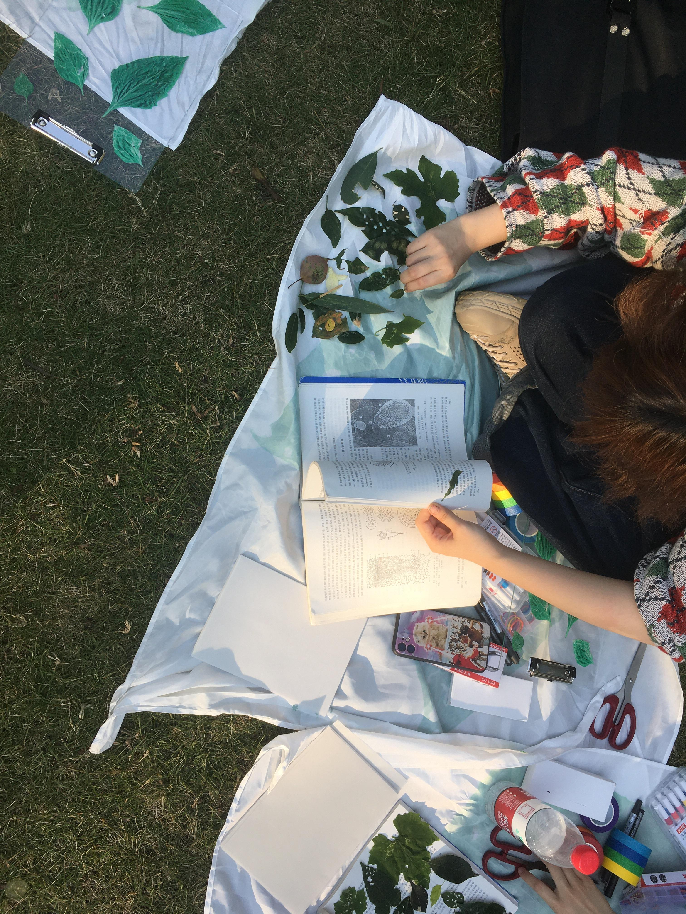
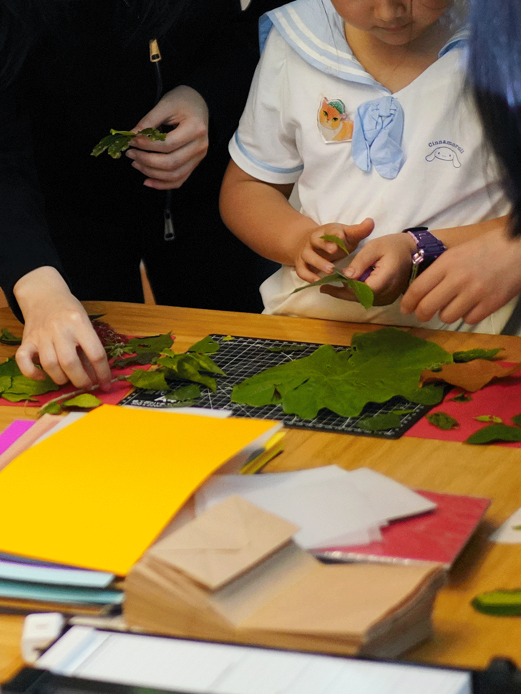
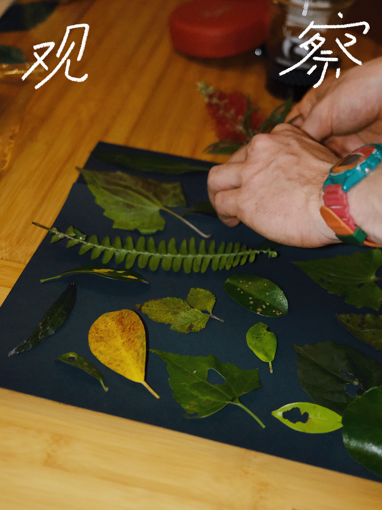
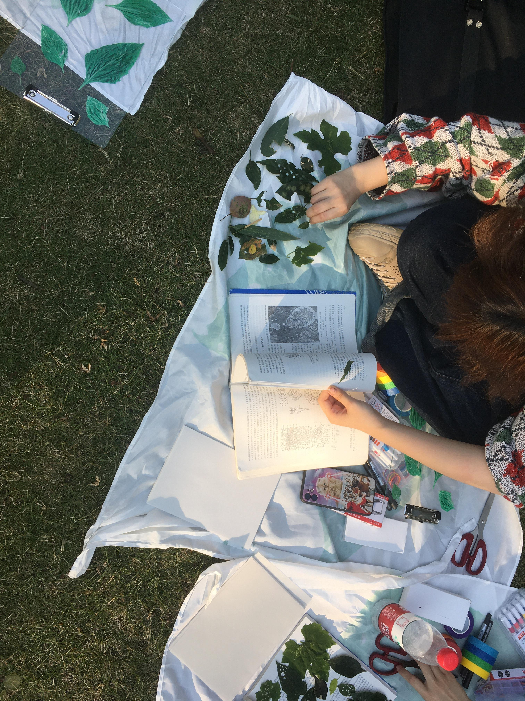

By walking in the nature,people collect leaves with leaf miner’s mark,worm wholes or any other patterns, they will use those as a “key-frame” for their animated zine.
This animation workshop is a collaboration with clumsy hands, it has been held in different cities in China such as Hangzhou, Chengdu and Shenzhen.
Workshop Execution& Design by Yujie Xu
In collaboration with clumsy hands
Supported by Onon, Beibei, Matt, Shenjie, Ziyang, Miaomiao
more info (in Chinese): workshop open call / workshop record 01

 

 





